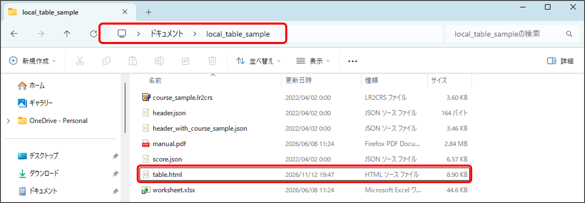
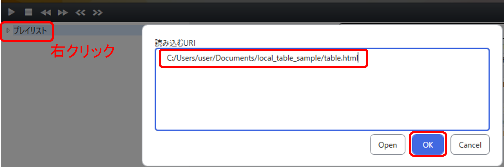
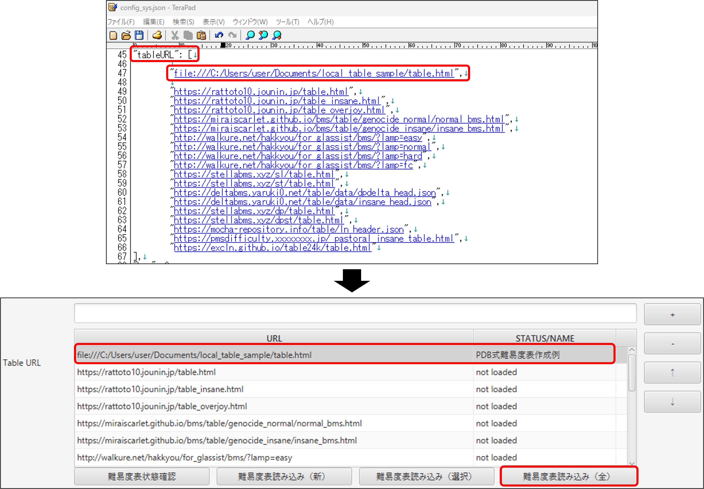
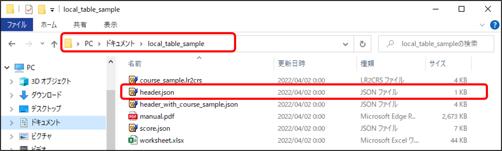
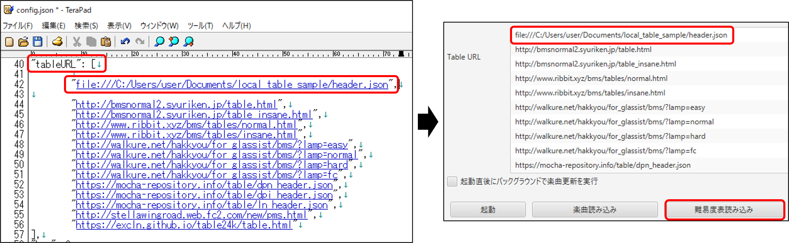

ホスティングサービスにファイルをアップせず、ローカル環境下に難易度表を作成し楽しむ方法はありませんか？ というリクエストを頂きました。
そこで当コラムでは、Google スプレッドシートの代わりに 表計算ソフト(.xlsx / Excel等) でデータを作成し、URLの代わりにファイルパスから難易度表を登録する方法をご紹介します。
コラム - 難易度表の作成方法について / 段位認定コースセットの作成方法について の内容を統合しています。動作対象の本体プレイヤーは LR2 / beatoraja です。
当コラムは beatoraja 0.8.5 / BeMusicSeeker 正規版 に基づいて作成しましたが、その後のアップデート等により、うまく使えなくなっている報告を頂きました。
■ 入手困難となった正規版に代わり、BeMusicSeeker Unofficial Fork が発展しつつあります。
■ beatoraja 0.8.6 以降、記事内で取り上げていたファイル config.json が config_sys.json に置き換わりました。
■ beatoraja 0.8.9 (2026/10/17～) 以降、難易度表のURLとして header.json を指定する方法では難易度表が読み込めなくなりました。# jbmstable-parser (a914f60) で .json を直接指定すると動かない問題の回避策 で挙げられている対処策に従い、読み込み用の table.html を用意してURLを書き換えれば再び読み込めるようになります。
ただし、beatoraja 0.8.8 以前のバージョンでは逆に、この方法では難易度表を読み込めません。
これらを踏まえ、コラムの改訂を行いました。これ以降の解説は beatoraja 0.8.9 (2026/10/17～) および BeMusicSeeker Unofficial Fork 3.1.0.0 版の仕様に従います。
各クライアントごとの作業内容、使用すべきファイルは下表のとおりです。必ず確認し、適宜読み替えて作業してください。
| クライアント | 難易度表の読み込みに 使用すべきファイル |
C:/Users/user/Documents/local_table_sample に配置した場合のファイルパス例 |
設定ファイルに追記すべき内容 |
|---|---|---|---|
| beatoraja 0.8.9 以降 (2026/10/17 ～) |
難易度表形式のHTML table.html |
C:/Users/user/Documents/local_table_sample/table.html |
config_sys.json"file:///C:/Users/user/Documents/local_table_sample/table.html",
|
| beatoraja 0.8.6 ～ 0.8.8 | header.json | C:/Users/user/Documents/local_table_sample/header.json |
config_sys.json"file:///C:/Users/user/Documents/local_table_sample/header.json",
|
| beatoraja 0.8.5 以前 | header.json | C:/Users/user/Documents/local_table_sample/header.json |
config.json"file:///C:/Users/user/Documents/local_table_sample/header.json",
|
| LR2 (BeMusicSeeker Unofficial Fork) |
table.html / header.json いずれも使用可能 |
C:/Users/user/Documents/local_table_sample/table.html C:/Users/user/Documents/local_table_sample/header.json |
不要 BeMusicSeeker の URI 指定でファイルパスを直接入力 C:/Users/user/Documents/local_table_sample/table.html
|
【Download】ローカル環境用 難易度表作成用テンプレート & サンプルセット (v2.0 2026/11/12)
■ 「worksheet.xlsx」 … ここでデータ作成を行います。.xlsx に対応した表計算ソフトが必要です。(Excel 2019 で動作確認しました。)
■ 「header.json」 … 難易度表全般のプロパティと段位認定情報を書き込むファイルです。
■ 「score.json」 … 難易度表に登録する譜面の情報を書き込むファイルです。
■ 「table.html」 … beatoraja 0.8.9 以降で、ローカル難易度表を読み込ませる際に使用します。
■ 「header_with_course_sample.json」「course_sample.lr2crs」 … 解説用のサンプルファイルです。
■ 「manual.pdf」 … 完全オフライン環境向けのマニュアルです。内容は当コラム(と関連するコラム) に準じますので、どちらを参照頂いても構いません。
スプレッドシートの代わりに「worksheet.xlsx」を使用する以外は 難易度表の作成方法について の手順(2)～(3) と同様です。詳しくは当該コラムを参照してください。
メモ帳アプリから「header.json」を編集し、ワークシートの「テンプレート(難易度表)」に楽曲データを書き込んで「score.json」に貼り付けます。
「score.json」のデータ末尾 }, を }] に書き換えるところだけは手動で、毎回忘れずに行ってください。
ローカル環境の場合は 難易度・曲名・md5・sha256 (BMSONの場合のみ) のデータが揃えば十分です。「bmsmd5 の効率的な取得方法について」 も参考にどうぞ。
こちらも 段位認定コースセットの作成方法について と同様の作業になります。
ただし、この作業を行って改変した「header.json」に1コースも登録されていない場合、難易度表の読み込みに不具合が発生します。
段位認定が必要なければこの工程はスキップし、作業する場合は必ず1コース以上作成しておいてください。
ワークシートの「テンプレート(段位認定)」に各種データを書き込んで、LR2の場合はコースファイルを出力し、beatoraja の場合は「header.json」を上書きします。
「header.json」コースデータ記入部 最終行末尾のカンマの削除 ]}, → ]} は毎回忘れずに行ってください。
「header_with_course_sample.json」「course_sample.lr2crs」は、ワークシート「シート例(段位認定)」の情報を記入した場合の出力例です。参考にどうぞ。
「table.html」「header.json」「score.json」が同一ディレクトリにあることを確認し、フォルダ全体の設置場所を確定してください。
設置場所は自由に決めて構いませんが、ファイルパスに半角英数字(ASCII文字) 以外が含まれないようにしてください。
次に、「table.html」の右クリックメニューからファイルパスを取得し、メモ帳アプリなどに貼り付けます。(Win10 以前の場合は ファイルを選択 > Shift+右クリック > パスのコピー)
貼り付けたパスからダブルクォーテーション（"）を削除し、パス内の \ 記号を / に変換しておいてください。
以下は一例として、ユーザ名 "user" が Cドライブ > ドキュメント にサンプルファイル「local_table_sample」全体を設置したものとして紹介します。

BeMusicSeeker Unofficial Fork を使用します。あらかじめインストールしておいてください。Ribbit氏の正規版や 黒皇帝氏のミラー版 を既に使用している場合はそちらで構いません。
メイン画面の左側「プレイリスト」を右クリック > インポート > URLを指定して読み込む を選択し、上記のファイルパスを入力して OK を押すと難易度表として読み込まれます。

(beatoraja 0.8.9 現在) beatoraja-config > リソース > Table URL ではファイルパスが入力出来ませんが、URLの保存されている beatoraja/config_sys.json を直接編集する事で、ファイルパスから難易度表を読み込ませることが可能になります。ただし、操作を誤ると config_sys.json が初期化されてしまうので、あらかじめバックアップを作成しておいてください。
beatoraja フォルダ直下の config_sys.json をメモ帳で開き、"tableURL":[ と書かれている行の下に新たに行を挿入し、次のように入力して保存します。

きちんと導入できていれば、上図のように beatoraja-config > リソース > Table URL に難易度表が表示されています。「難易度表読み込み」を押して反映しましょう。
表示されない場合、先に一度リソースタブ内の「難易度表読み込み（全）」を実行してみてください。また、\ 記号や非ASCII文字が含まれていないか、ファイルパス周りの記述にミスがないか、もう一度確認してください。
table.html の代わりに header.json のファイルパスを取得し、config_sys.json で同様に記入します。

config_sys.json の代わりに config.json を開き、header.json のファイルパスを記入します。

以降は通常の難易度表と同様に、「header.json」「score.json」を編集し、BeMusicSeeker あるいは beatoraja 上で更新すればOKです。
難易度表のファイル一式を移動させたい場合は、いったん難易度表の登録を解除し、移動先のファイルパスで再度上記の導入作業を行ってください。
2つ目以降の難易度表を作成した場合も同様に行ってください。